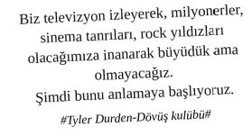

iPad Profesyonelleri

Hayatın sayfalarını kaydırarak
çeviren profesyoneller
Küçücük bir çocukken tek kanallı televizyon ve sokaklarda akşam ezanına kadar arkadaşlarla fütursuzca nefes harcarken dökülen terler ile şekillenen hayal dünyası; plaza girişinde güvenliğe teslim edilerek, profesyonel kimlik ile yer değiştirdi.